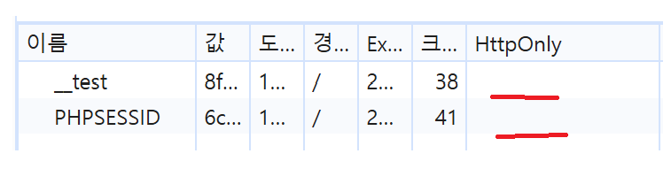

SISEON 서비스 수동 점검 및 패킷 분석 결과
register.phplogin.phpmypage.phpprofile_edit.phpadminshop.phpproduct.phpboard.phpboard_write.phpboard_view.phpboard_edit.phpboard_delete.php| 점검 관점 | 확인한 위치·기능 | 진단 결과 | 발견 사항 |
|---|---|---|---|
| SQL Injection | 로그인, 검색 등 | 양호 | 정상 파라미터 처리 확인 |
| XSS (Cross-Site Scripting) | 글쓰기, 댓글, 검색 등 | 양호 | 입력값 렌더링 검증 결과 특이사항 없음 |
| 인증 & 세션 | 로그인, 관리자 도구 등 | 취약 | 세션 쿠키 내 HttpOnly 속성 미설정 확인 |
| IDOR · 접근제어 | 게시글, 마이페이지 등 | 양호 | 객체 접근 권한 통제 양호 |
| 권한 검사 | 관리자 페이지, 로그인 필요 기능 | 양호 | 미인증 사용자 접근 제한 정상 작동 |
| 파일 업로드 | 첨부파일, 프로필 사진 | 미확인 | 서비스 내 해당 기능 부재 또는 미검증 |
| 정보 노출 & 설정 | 오류 메시지, 백업 파일 등 | 점검 제외 | 범위 외 항목으로 점검 제외 |
심각도 분석: 로그인 시 발급되는 세션 쿠키에 HttpOnly 속성이 설정되어 있지 않아, 추후 XSS 등 추가 취약점과 연계될 경우 자바스크립트를 통해 세션 쿠키가 그대로 탈취될 위험이 있습니다.

상세 내용: 로그인 기능 이용 시 개발자 도구를 통해 확인한 세션 식별자 쿠키에 HttpOnly 플래그가 누락되어 있음을 확인하였습니다. 이에 따라 클라이언트 단의 자바스크립트(document.cookie) 명령을 이용한 쿠키 접근이 가능한 상태입니다.
대응 방안: 서버 측에서 세션 쿠키를 발행할 때 HttpOnly 및 Secure 속성을 함께 적용하여 비인가된 자바스크립트의 쿠키 접근을 원천 차단해야 합니다.
애플리케이션 내 검색 입력 폼이 존재하지 않아 Reflected XSS 취약점의 안전 여부를 직접 파악하기 어려움.
첨부파일 및 프로필 사진 등 파일 업로드 관련 인터페이스가 없어 해당 항목 진단은 미확인 처리함.
세션 쿠키 HttpOnly 설정 적용SISEON 서비스 대상 취약점 진단 결과, SQL Injection, XSS, IDOR 등 주요 웹 공격 벡터에 대해서는 전반적으로 안전(양호)한 상태를 유지하고 있음을 확인했습니다. 다만, 로그인 세션 쿠키 발급 시 HttpOnly 속성이 미설정된 보안 설정 미흡 사항이 식별되었으므로, 세션 보호 강화를 위한 쿠키 속성 패치가 우선적으로 적용되어야 합니다.